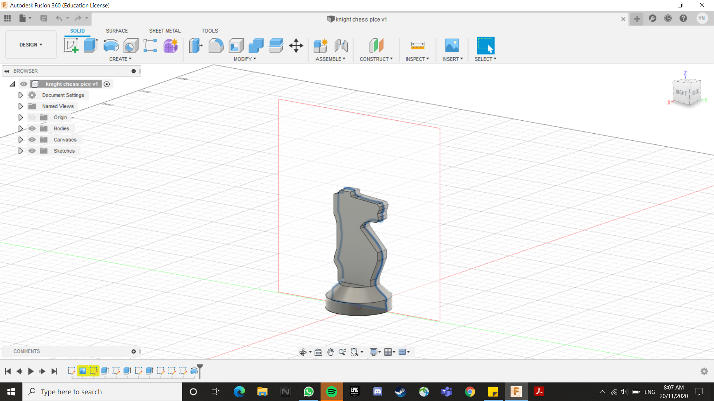
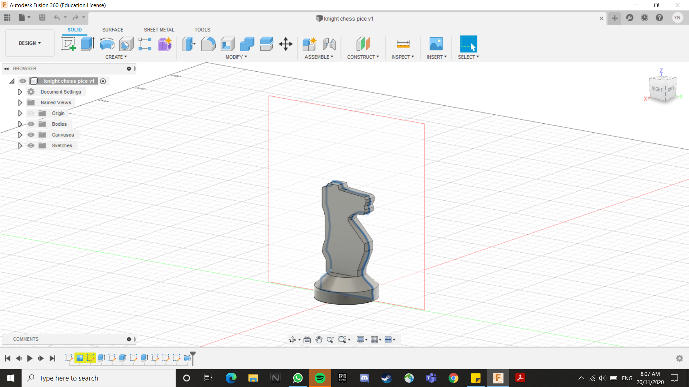

Some drawings for 3d printing

 

Some 3D printing info :)
When it comes to printing there are various ways to print a single object drawn on the computer. From changing the thickness of the wall of your piece to changing the density of the interior. There are also ways that can inprove the integraty of the base and finish of the piece such as skirting or briming. For skirting, the machine forms a thin layer below the work pice. This allows the removal of the wokrpiece to not damage the base of the piece. This also alows for a more rigid base as the base layer(The skirt) allows for a cleaner finish at the base. As for briming, the machine forms a thick base at the bottom of the print out. And lastly the material used in the machine is PLA.
Steps To Print
Step 1
In the first step, the object is first drawn in CAD
Step 2
Secondly the file of the 3D drawing is placed into a file slicer which allows the file to be convered into a Gcode
Step 3
Lastly the codes are then downloaded into the 3D printer which reads the code and prints the object
this line is used to define and help the computer find the file that you want to open when you click on the link.
This is the start of my little print out which is a khight chess piece. Do you notice the little ring around the print out? that is to enshure the extrusion of the material from the printer nose is consistent before the actual printing.
IT IS FINISHED. this is the completed print with the supports still attached.
COMPLETED my first print out yay.
the beginings of the F1 car steering wheel fidget spinner
completed!